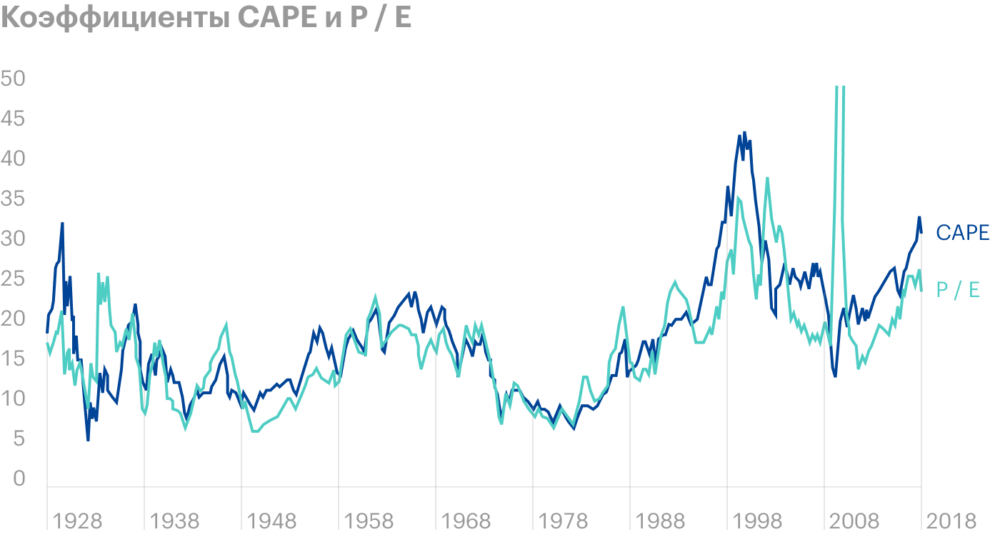
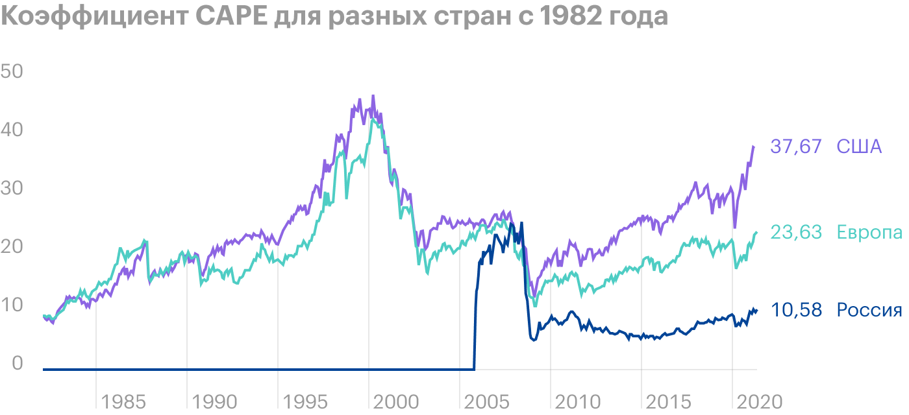
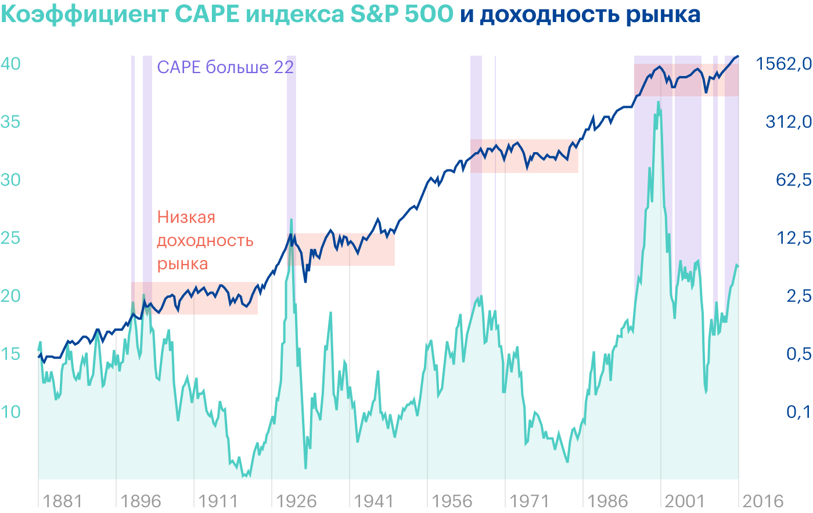
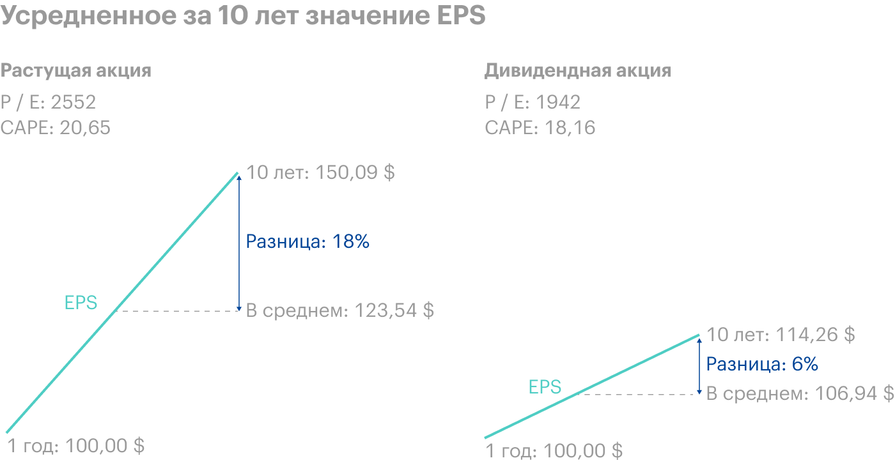
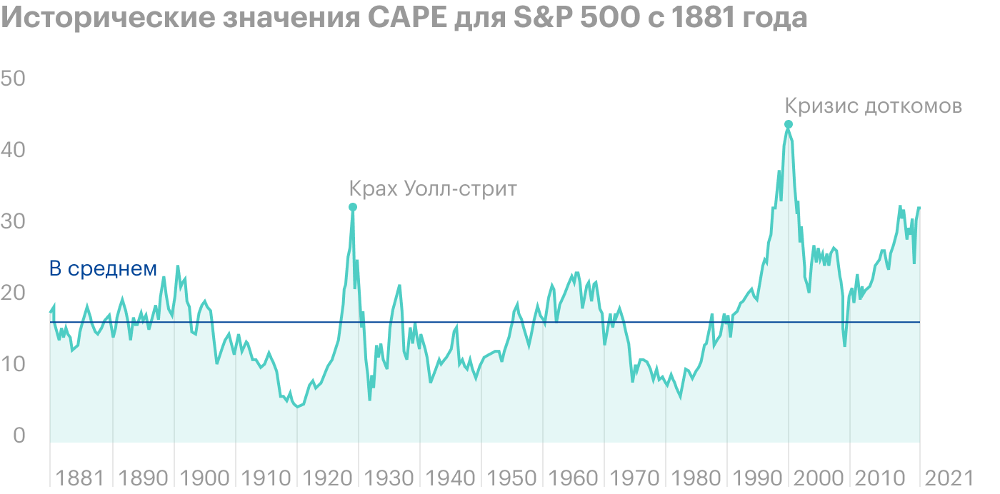
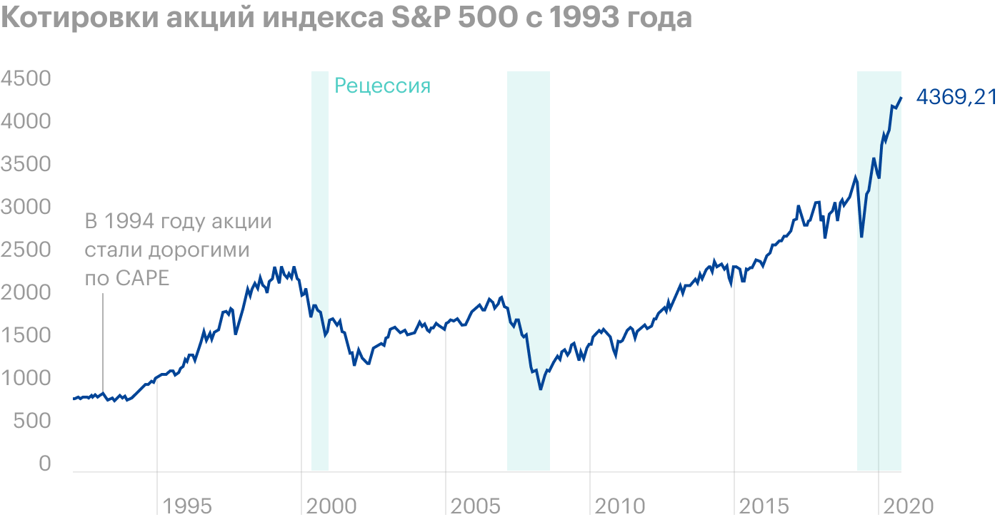
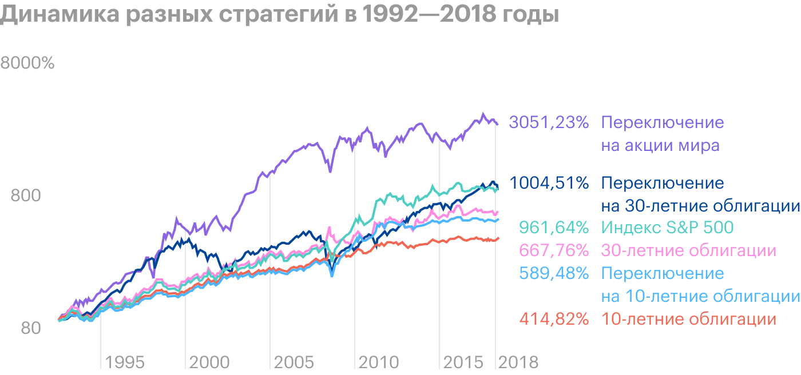

Графики CAPE(для разных стран)
Слышал, что по параметру CAPE можно определить пузырь на фондовом рынке. Так ли это? И есть ли сейчас на американском рынке пузырь?
Параметр CAPE, или P / E Шиллера, придумал профессор из Йельского университета Роберт Шиллер. Этот коэффициент обычно используют, чтобы определить справедливость оценки рынка акций в целом или отдельных акций.
Слишком высокое значение CAPE действительно может говорить о пузыре на фондовом рынке, но не гарантирует, что в скором времени случится обвал. Так или иначе, при высоком CAPE инвестору стоит насторожиться.
CAPE расшифровывается как Сyclically Adjusted Price-to-Earnings Ratio, то есть циклически скорректированное соотношение цены к прибыли. Чтобы рассчитать этот коэффициент, берут показатели компаний за 10-летний период. Это позволяет сгладить колебания корпоративной прибыли в разные периоды делового цикла.
Считается коэффициент так: делим текущее значение ценового индекса или цену акции на среднее значение прибыли компаний за десятилетие с поправкой на инфляцию.
Допустим, текущая цена акции — 1000 $. Размеры инфляции и прибылей на акцию (EPS) за последние 10 лет указаны в таблице ниже.
Сначала считаем скорректированную на инфляцию EPS для каждого года. Затем берем среднее арифметическое, чтобы получить значение за 10 лет, — вышло 61 $. Это средний размер прибыли на акцию, которую она дала компании в последней декаде с учетом инфляции.
В заключение делим текущую стоимость акции, то есть 1000 $, на 61 $. Получаем CAPE, равный 16,4.
| Год | Прибыль на акцию — EPS | Инфляция | EPS с учетом инфляции |
|---|---|---|---|
| 1 | 60 $ | 10% | 54 $ |
| 2 | 90 $ | 10% | 81 $ |
| 3 | 100 $ | 10% | 90 $ |
| 4 | 90 $ | 5% | 85,5 $ |
| 5 | 110 $ | 5% | 104,5 $ |
| 6 | 20 $ | 5% | 19 $ |
| 7 | 30 $ | 5% | 28,5 $ |
| 8 | 40 $ | 2% | 39,2 $ |
| 9 | 50 $ | 1% | 49,5 $ |
| 10 | 60 $ | 2% | 58,8 $ |
| Средняя EPS с учетом инфляции | 61 $ | ||
| CAPE при цене акции 1000 $ | 1000 / 61 = 16,4 | ||
CAPE аналогичен популярному мультипликатору P / E — соотношению цены к прибыли. Оба используются для оценки дороговизны рынка или отдельной акции. Разница в том, что P / E берет в расчет только годовую прибыль компаний, и это может исказить картину, например, если цена акций неожиданно взлетела или у корпораций резко упала прибыль.
В то же время CAPE учитывает не годовую прибыль, а среднее значение за десятилетие. Это нивелирует колебания прибылей компании, связанные с той или иной фазой бизнес-цикла, и дает более объективную оценку, особенно если речь идет о циклических компаниях.
Циклические — это компании, чьи операционные показатели следуют за ростом и спадом в экономике. В кризис продажи таких компаний сильно проседают. Пример — производители товаров второй необходимости вроде мебели и авто. В тяжелой финансовой ситуации потребители откладывают такие покупки до лучших времен, соответственно, компания недополучает прибыль.
С другой стороны, нециклический бизнес демонстрирует более-менее стабильную выручку независимо от состояния экономики. Например, это коммунальные компании. Ведь люди не могут отказаться от использования света и воды даже во время кризиса.
Подробнее о циклических компаниях и фазах бизнес-цикла мы писали в статье про фундаментальный анализ.
Из-за разной специфики секторов индекс S&P 500 редко когда бывает сбалансированным. Обычно какие-то секторы оцениваются более высоко, нежели другие. Так, в инновационных отраслях сконцентрированы акции роста, с которыми инвесторы связывают высокие ожидания, поэтому они обычно стоят дороже.
Для нециклических секторов коэффициенты CAPE и P / E не сильно разнятся друг от друга, ведь на протяжении всего бизнес-цикла финансовые показатели подобных компаний сильно не колеблются.
S&P 500 на июнь 2021 года имеет CAPE 37,5 и P / E 33,2. Они более чем в два раза превышают средние исторические значения CAPE и P / E, то есть в районе 15.
| Сектор | Количество компаний | CAPE | P / E |
|---|---|---|---|
| S&P 500 | 500 | 37,50 | 33,20 |
| Промышленный | 73 | 32,40 | 73,70 |
| ИТ | 71 | 46,60 | 37,10 |
| Финансовый | 69 | 22,60 | 22,00 |
| Товары второй необходимости | 66 | 59,20 | 97,40 |
| Здравоохранение | 65 | 36,60 | 35,70 |
| Товары первой необходимости | 35 | 26,90 | 25,20 |
| Недвижимость | 29 | 55,80 | 57,10 |
| Коммунальный | 28 | 29,30 | 27,20 |
| Нефтегазовый | 22 | 21,70 | −10,40 |
| Сырьевой | 21 | 38,90 | 50,00 |
| Коммуникации | 26 | 54,00 | 42,80 |

Во время кризиса 2008 года коэффициент P / E взлетел до 86. В то же время CAPE за счет 10-летнего сглаживания оставался предсказуемым. Источник: Econompicdata

По CAPE можно оценивать разные рынки. Источник: Barclays

Когда коэффициент CAPE индекса S&P 500 становился выше 22, доходность рынка в течение следующего десятилетия была довольно низкой. Источник: Star Capital
Коэффициент по своей сути ориентирован на прошлое, а не на будущее. И то, как работал бизнес 10 лет назад, может сильно отличаться от того, как дела обстоят сейчас.
За последние десять лет произошли сильные изменения в регулирующих законах и подходах к бухгалтерскому учету. Для расчета коэффициента берутся прибыли по GAAP — общепринятым принципам бухгалтерского учета. А они изменились. Из-за этого сейчас мы, возможно, наблюдаем искаженную картину по CAPE.
Повышенный CAPE может быть связан с планомерным снижением процентных ставок. Также может влиять рост активности частных инвесторов на фондовом рынке. Вероятно, именно поэтому с 1988 года по текущий момент было только семь месяцев, когда коэффициент CAPE падал ниже своего исторического среднего значения. Все остальное время он оставался завышенным и так давал инвесторам медвежий сигнал.
Однако индекс S&P 500 в последние десятилетия рос в среднем более чем на 10% в год с учетом дивидендов. Таким образом, в этот период не стоило принимать инвестиционные решения лишь на основе CAPE.
По оценке специалистов Vanguard, CAPE объясняет порядка 43% будущей дисперсии реальной доходности акций в следующие 10 лет. Это лучше, чем дают P / E, дивидендная доходность и другие показатели. Но получается, что больше половины будущей дисперсии реальной доходности нельзя вывести из CAPE. Другими словами, способность CAPE предсказывать будущий результат на рынке акций оставляет желать лучшего. Правда, по другим расчетам, которые я упоминал выше, CAPE с этим справляется лучше, чем считает Vanguard.
Еще один недостаток CAPE: он учитывает в своей формуле ценовой рост актива и не берет в расчет характер распределения прибыли компаний, в частности дивидендные выплаты и байбэки — обратный выкуп акций.
Например, есть две идентичные компании, которые показывают одинаковую прибыль и одинаковые P / E за последние 12 месяцев. Но распределение прибыли у них отличается: первая компания выплачивает 75% прибыли в виде дивидендов, а 25% реинвестирует в рост, в том числе увеличивая стоимость своих акций за счет байбэка. Вторая же компания делает наоборот: выплачивает 25% прибыли в виде дивидендов, а 75% направляет в рост. Несмотря на идентичные характеристики компаний, у второй CAPE будет выше.
За счет того, что вторая компания направляет большую долю прибыли в рост, ее доходы растут быстрее. И когда мы усредняем их на 10-летнем периоде, то снижаем их на большую относительную величину. То есть среднее значение прибыли за 10 лет будет сильнее отставать от котировок, которые закладывает рынок с учетом показателей компании за более поздний период — последние 12 месяцев.
В конечном счете CAPE растущей компании будет выше. Хотя оценка по P / E у растущей и дивидендной компаний одинаковая.
Это может объяснить, почему в последние десятилетия мы наблюдаем повышенный коэффициент CAPE в сравнении с более ранними эпохами. Ведь уровень дивидендных выплат для компаний США сейчас ниже, чем был раньше. При этом большая часть корпоративной прибыли направляется на рост бизнеса и байбэки. По этой причине у EPS тенденция быстрее расти, и за счет эффекта усреднения на 10-летнем отрезке мы получаем сильно запаздывающий средний EPS, а это в итоге дает завышенный CAPE.
Если же модифицировать методику расчета CAPE, взяв не просто ценовой рост акции, а его полную доходность с учетом дивидендов, мы получаем более справедливую оценку по CAPE, которая несколько ниже текущих отметок. С сентября 2018 года Шиллер также использует альтернативный CAPE, чтобы учесть специфику распределения прибыли компаниями.

Усредненное за 10 лет значение EPS для растущей акции сильнее отличается от текущего EPS, нежели в случае с дивидендной акцией. При этом цена акций отражает текущую EPS, и это автоматически увеличивает CAPE для растущих акций. Источник: Philosophical EconomicsВ прошлом коэффициент CAPE помогал выявлять рыночные пузыри. Историческое среднее значение коэффициента для индекса S&P 500 составляет 15,2, а CAPE свыше 30 говорит о переоцененности рынка. Напомню, что на июнь 2021 года CAPE американского рынка акций равен 37,5.
До этого рекордные уровни этого коэффициента для рынка США были в 1929 году перед крахом Уолл-стрит, который положил начало Великой депрессии, и в конце 1990-х перед кризисом доткомов. Тогда он достиг пика — 44,2.
При прогнозировании будущей доходности акций помимо естественного роста прибылей компаний и выплачиваемых ими дивидендов стоит принимать в расчет дальнейшую тенденцию в изменении оценки рынка. Этот фактор можно назвать спекулятивным.
На очень долгих горизонтах инвестирования изменения в оценке, как правило, не вносят существенного вклада в общую доходность S&P 500. Например, если брать отсчет с 1870 года, постепенный 150-летний рост оценочных мультипликаторов добавлял к доходности акций лишь 0,7% годовых. Однако с 1975 по 2021 год изменение в оценке CAPE повлияло на доходность инвестора сильнее, добавив 3,3% годовых.
Ниже приведена декомпозиция исторической доходности индекса S&P 500 с 1975 по 2021 год. Как видим, S&P 500 за это время показал 12% годовых, из них 2,8% — дивидендная составляющая, 0,5% — сложный процент от реинвестирования дивидендов, 1,8% — фундаментальный рост компаний, 3,6% — рост за счет инфляции. Рост CAPE со значения 8,3 в 1975 году до более 30 в настоящий момент дал еще 3,3%.
| Годовая доходность | 12,0% |
| Рост за счет инфляции | 3,6% |
| Оценка CAPE | 3,3% |
| Дивиденды | 2,8% |
| Фундаментальный рост компаний | 1,8% |
| Реинвестирование дивидендов | 0,5% |

Источник: The Economist
Этот спекулятивный компонент стоит учитывать в прогнозах. Измерим его для каждого десятилетия с 1975 года, взяв процентную разницу между начальным и конечным значениями CAPE. Только для периода с 1975 по 1979 год получается неполная декада.
| Декада | Начальный CAPE | Конечный CAPE | Изменение CAPE |
|---|---|---|---|
| 1975—1979 (неполная) | 8,3 | 8,7 | 5,5% |
| 1980—1989 | 8,7 | 17,7 | 101,8% |
| 1990—1999 | 17,7 | 44,2 | 150,4% |
| 2000—2009 | 44,2 | 20,3 | −54% |
| 2010—2019 | 20,3 | 30,3 | 49,3% |
Мы видим сильный рост CAPE в 1980-е годы, но он по-прежнему оставался близок к среднему значению. Затем он продолжил безостановочно расти в 1990-е, пока в декабре 1999 года не достиг рекордного значения — 44,2. После этого случился обвал доткомов и последовало потерянное десятилетие для акций, когда оценки возвращались к среднему значению CAPE — до 20,3.
В 2010-е годы мы наблюдали очередной бычий рынок. К концу 2019 года CAPE снова превысил значение 30. Во время мартовского обвала 2020 года CAPE на короткое время снизился до 24,8, но затем снова взлетел до 33,5 к концу 2020 года, попав в 2% самых высоких оценок за всю историю. Таким образом, новое десятилетие, 2020—2030 годы, началось с крайне высокого CAPE, и он продолжает расти.
Чтобы в течение нового десятилетия повторить опыт 2010-х и обеспечить рост стоимости оценок акций США на 50%, коэффициент CAPE должен в течение следующих девяти лет побить беспрецедентный уровень — 45.
Но любой экстремум скорее будет стремиться к своему среднему значению, нежели бить новые рекорды. Поэтому можно ожидать, что оценка рынка в ближайшие годы будет остужаться. А это снизит доходность от инвестиций в акции. При этом необязательно, что она станет отрицательной, — просто не стоит рассчитывать на номинальную доходность 12% годовых, которую в последние десятилетия давал S&P 500. Ведь мы, вероятно, недополучим 3,3% годовых, которые достигались за счет роста CAPE.
CAPE в данный момент на 46,3% выше, чем 20-летнее среднее значение для этого коэффициента — 25,6. Если CAPE пойдет к этому значению с той же скоростью, как он рос до этого, то есть 3,3% в год, то это может снизить отдачу от вложений в американские акции до уровня 5,4% годовых, и это без учета инфляции.
Также стоит учитывать, что чем выше CAPE, тем сильнее будет просадка в случае весомой коррекции. Как показано в таблице ниже, исторически при более высоком CAPE максимальные просадки в последующие 3 и 15 лет выше.
В худшем случае при CAPE менее 10 наблюдалось снижение мировых рынков на 51% в течение следующих трех лет, а при CAPE более 30 — на 76,8%.
| Значения CAPE | Средняя макс. просадка в след. 3 года | Средняя макс. просадка в след. 15 лет | Наибольшая макс. просадка в след. 3 года |
|---|---|---|---|
| 0—10 | −5,7% | −5,2% | −51% |
| 10—15 | −8,8% | −11,1% | −63,9% |
| 15—20 | −12,4% | −13,6% | −70,8% |
| 20—25 | −18,1% | −23,1% | −72,7% |
| 25—30 | −22,3% | −27,5% | −74,4% |
| Больше 30 | −28,8% | −39,5% | −76,8% |
Даже при высоком CAPE есть вероятность, что его рост не остановится.
Так, в конце 1992 года CAPE превысил значение 20 и вошел в зону перекупленности, хотя и не слишком далеко ушел от среднего значения. Если бы инвестор тогда воспринял это как тревожный сигнал и продал акции, он бы недополучил за последующие годы 961% прибыли. Ведь кто тогда мог предположить, что CAPE будет оставаться повышенным все последующие годы, кроме короткого периода с 2008 по 2009 год.

Казалось бы, это полностью перечеркивает состоятельность CAPE, но не все так просто. Ведь выход инвестора из акций означал бы приобретение какого-то другого актива. Скорее всего, инвестор в 1992 году переложил бы капитал в казначейские облигации.
| S&P 500 | 10-летние облигации | 30-летние облигации | |
|---|---|---|---|
| Полная доходность | 961,64% | 414,82% | 667,76% |
| Среднегодовая доходность | 9,10% | 5,62% | 7,58% |
| Волатильность | 14,22% | 7,21% | 13,13% |
| Коэффициент Шарпа | 0,47 | 0,44 | 0,39 |
| Максимальная просадка | −50,95% | −10,23% | −25,84% |
В то время как 10-летние облигации серьезно отставали от акций, показав 414,82%, 30-летние облигации дали неплохой результат — 667,76%. Во многом такой результат был за счет снижения ключевых ставок.
При этом максимальная просадка облигационного портфеля была гораздо ниже, чем у акций. Если бы инвестор сидел в акциях, то во время кризисов 2000 и 2008 годов мог запаниковать и скинуть активы и недополучил бы прибыль. Как видим, выход из акций в облигации не был столь катастрофичным для инвестора.
Кроме того, можно было переложиться из облигаций обратно в акции, как только их CAPE становился бы относительно низким. Алгоритм действий такой: мы находимся в акциях США, когда CAPE меньше 20, и в облигациях, когда он больше 20. Попробуем такую систему переключения между акциями и облигациями.
Стратегия, где мы переключаемся на 30-летние облигации в зависимости от CAPE, сработала отлично: доходность сопоставима с S&P 500, а все остальные показатели лучше. Похоже, что на CAPE все же можно было положиться.
Но здесь важно помнить, что ключевые ставки в последние годы планомерно падали, а значит, длинные облигации из-за этого дорожали. Сейчас, когда ставки близки к нулю, я бы не стал рассчитывать на подобную доходность от вложения в облигации.
Вместо облигаций инвестор мог бы использовать инструменты с большей отдачей, например акции других рынков с более дешевым CAPE. То есть возможен и другой алгоритм: при CAPE американских акций выше 20 мы перекладываем капитал в наиболее дешевые по CAPE 25% мировых рынков.
Теперь вернемся к инвестору, который в конце 1992 года из-за высокого CAPE продал акции США и упустил рост 961%. Далее все зависело от того, куда он вложил эти деньги.
Если в 30-летние облигации по принципу «купил и держи», то его результат составил бы 667,76%. Если бы он вложил в 30-летние облигации, но возвращался бы в акции, как только CAPE становился низким, то заработал бы 1004,91%. И наконец, если бы он провернул ту же схему с глобальными акциями, то выручил бы 3051%. Это на 4 п. п. в год больше, чем при инвестировании в S&P 500.
| S&P 500 | 10-летние | 30-летние | Переключение на 10-летние | Переключение на 30-летние | Переключение на акции мира | |
|---|---|---|---|---|---|---|
| Полная доходность | 961,64% | 414,82% | 667,76% | 589,48% | 1004,91% | 3051,23% |
| Среднегодовая доходность | 9,10% | 5,62% | 7,58% | 7,06% | 9,28% | 14,05% |
| Волатильность | 14,22% | 7,21% | 13,13% | 8,65% | 12,88% | 19,31% |
| Коэффициент Шарпа | 0,47 | 0,44 | 0,39 | 0,53 | 0,53 | 0,6 |
| Максимальная просадка | −50,95% | −10,23% | −25,84% | −24,99% | −23,47% | −39,62% |

Коэффициент CAPE нивелирует колебания корпоративной прибыли, связанные с фазами делового цикла. Поэтому он зачастую более объективен, чем P / E.
В конце июня 2020 года CAPE американского рынка акций около 37,5, что заметно выше среднего. Вероятно, он будет стремиться к своему историческому среднему значению. При этом чем выше CAPE, тем сильнее падение при рыночном обвале.
Пр этом нельзя гарантировать, что за высоким CAPE всегда следует низкая доходность или обвал рынка акций. Бывало и по-другому, а последние лет 30 CAPE американского рынка находится выше средних значений, при этом рынок в целом растет. Это может быть связано с низкими процентными ставками, активностью частных инвесторов и другими факторами.
Если вас беспокоит высокий CAPE рынка акций, можно увеличить долю облигаций и денежных средств в портфеле. Как вариант, можно подумать о золоте или нарастить доли нециклических компаний вроде коммунальных предприятий и производителей продуктов питания. Еще можно хеджировать портфель через инструменты срочного рынка.
Полностью избавляться от акций только из-за высокого CAPE вряд ли стоит, хотя можно подумать о стратегии переключения вроде той, что описывал Меб Фабер на примере 1993—2018 годов.